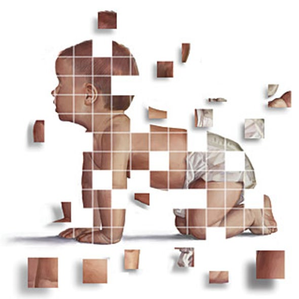
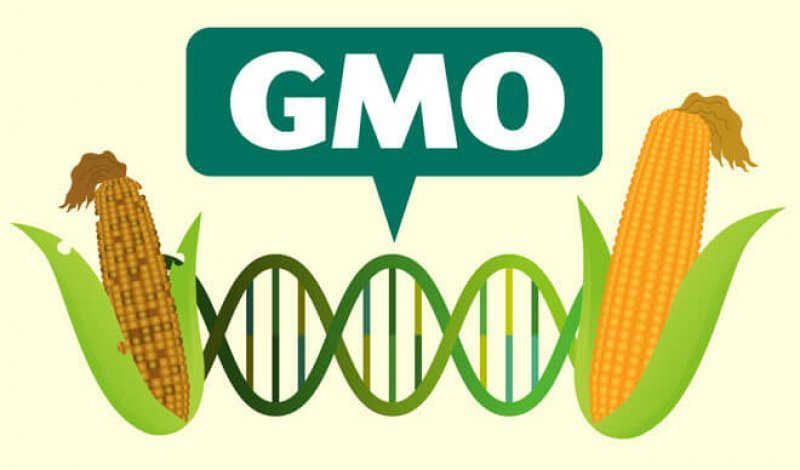

Why Is the Ethics of CRISPR Such a Major Topic of Debate?
Genome editing technology is not new, and yet CRISPR has sparked a major debate over
the ethics of this technology. So what makes CRISPR different from previously available
genome editing technologies? Biologists have been able to edit genomes for quite some
time now, but these previous technologies have been expensive, technically challenging,
and extremely time-consuming. CRISPR, on the other hand, does not require any kind of
expensive equipment or sophisticated knowledge, and yet it can edit genes or whole genomes
of many organisms. The ethics debate is not just regarding the effects of gene editing
technology on human beings - it also concerns other species and the possible effects on
the environment and on entire ecosystems. The broad capabilities and lack of limitations
of CRISPR have thus rekindled the debate surrounding the ethics of gene editing technology.
Click the tabs to explore more!
- Human Beings
- Plants, Animals, & Other Organisms

Somatic Gene Editing v.s. Germline Gene Editing
In order to understand the ethical issues surrounding CRISPR gene editing technology
and its use on human beings, it is important to highlight the differences between
somatic gene editing and germline gene editing. Somatic gene editing therapies target
genes in specific types of cells, and the target cell type is the only kind that is affected.
Since changes are limited to the target cell type, any changes made are also limited to the
individual receiving the therapies and not their potential offspring. On the other hand,
germline gene editing therapies are used on the sperm, egg, or embryo of an individual.
Because the changes are made so early in the individual’s development, these edits are
copied in every cell. As a result, if the individual were to have children, those children
would also inherit the edited genes. This difference, along with the newness of germline
editing technology, makes germline therapies much more ethically complicated and controversial
than somatic therapies. Below is a break down of the ethical issues concerning CRISPR gene
editing technology:
Therapeutic v.s. Non-Therapeutic
One of the main ethical arguments regarding the use of genome editing technologies on human
beings is that it can be difficult to differentiate between disease treatment and enhancement,
leading to ethical complications in genome editing. Because CRISPR is so advanced and has so
few limitations, it can be used not only to treat medical conditions and prevent diseases,
but to enhance characteristics of a child. CRISPR can be used to create “designer babies”, as
they are termed, raising several ethical concerns. Should parents be allowed to choose the
traits of their children, selecting traits such as eye color, hair color, athleticism, and
height? Some ethical concerns regarding designer babies are that this technology could
increase social and economic divisions in society. If those who are wealthy gain the ability
to select desirable traits for their offspring, it could deepen economic divisions in society
by creating genetic divisions, as enhanced children would be separate from unenhanced children.
Those in favor of “designer babies”, on the other hand, argue that parents already possess a
high degree of control over their children, and can shape many of these characteristics
through their upbringing, so allowing parents to select traits in their children will not
have as severe consequences as critics argue. Even if CRISPR were only used for disease
treatment and not for enhancement purposes, there are still ethical concerns involved because
the division between therapeutic and non-therapeutic gene therapies is not clear. For example,
treating deafness through gene editing is considered therapeutic by some but non-therapeutic
by others. As a result, many scientists believe that a clear line must be drawn between
treatments for enhancement and those for disease treatment before allowing for the use of
CRISPR on human beings.

Consent
Although some bioethicists argue that parents have a right to prenatal autonomy, which allows
them to decide the fate of their children, the issue of consent is another major ethical
concern regarding CRISPR gene editing technology. This issue of consent is even more of a
concern when regarding CRISPR as opposed to other gene editing technologies because of its
ability to significantly alter the genomes of generations to come, not just of one individual
embryo. The first issue of consent is whether or not parents are allowed to give consent for
gene editing therapies for their offspring. An embryo does not have the ability to provide
consent for the procedure, but should parents have the power to give consent for their unborn
offspring? This debate is furthered by the concept of germline gene editing. Should parents
have the power to give consent for not only their embryo, but for all future generations of
offspring? The second issue of consent is that of informed consent. Some bioethicists argue
that until there is extensive research done on CRISPR and all of its possible risks are
well-known, it is impossible for parents to make a truly informed decision of consent. For
this reason, many bioethicists believe that it is not ethical to have parents give consent
for the use of CRISPR on their embryo until more research into its risks has been done.
Safety
Another main concern with CRISPR gene editing technology is its safety. Many bioethicists
believe that the risks with germline genome editing are so great that any potential benefits
of the therapies cannot be justified, at least until much more extensive research is done
on the technologies. If the genome editing therapy malfunctions, that mistake would affect
every single cell type in the embryo’s body through germline gene editing. Furthermore, that
mistake in gene editing would appear in the offspring of that embryo for generations upon
generations. Do any potential benefits of CRISPR justify the extent of the potential risks?
Many bioethicists find CRISPR especially difficult to justify ethically because of the
presence of other, less risky gene editing technologies. For example, preimplantation genetic
diagnosis, or PGD, allows doctors to make sure that the embryos that are implanted do not
possess altered genes, reducing the risk of a child being born with a genetic or chromosomal
disorder. Technologies such as these pose much smaller threats to the embryo and to future
generations of offspring, so many bioethicists argue that CRISPR and its potential benefits
cannot be justified due to the immense risk they pose.

An Immediate Concern
Although debates around CRISPR gene editing technology often surround the effects
of these therapies on human beings, the use of CRISPR on plants, animals, and insects
is also highly debated. While editing human genomes is not done frequently as of now, CRISPR
is being used to modify insects, animals, plants, and microorganisms, making it a more
immediate ethical concern than the use of this technology on human beings. There are several
aspects of the debate surrounding the ethics of using CRISPR gene editing technology on other
organisms, as described below:
Genetically Modified Organisms
Because it is so affordable and efficient, and because it has so many different
capabilities, CRISPR is being used often on plants, animals, insects, and other organisms in
order to produce human therapeutics and to benefit other fields of science and agriculture.
The issue is that some scientists believe there are not enough global regulations on the
creation of and the release into the environment of genetically modified organisms, also known
as GMOs. Although individual nations have regulatory programs, such as the United States’
Coordinated Framework for the Regulation of Biotechnology, there are no unified international
guidelines on CRISPR and GMOs. If more effective regulations are not put in place soon, many
scientists believe that public trust and understanding of CRISPRtechnology and the creation
of GMOs will decline. This is because CRISPR may be used to create GMOs through an invalid use
of the technology and may be used in excess if not regulated properly. In addition, more
questions are raised surrounding GMOs when they are used for human consumption. Many consider
the U.S. Food and Drug Administration’s criteria for allowing GMOs to be consumed by humans
unclear and not transparent enough. As a result, many scientists believe that until the
criteria surrounding GMOs is not clarified, no animals or plants that have been genetically
modified to be used as food for humans, such as farm animals with enhanced nutritional content
and increased muscle mass, should be approved for public use.


Unknown Consequences for the Environment
One of the key ethical concerns and main caveats regarding the use of CRISPR on plants,
animals, and other organisms is the potential effect on the environment and on ecosystems.
CRISPR can be used to tamper with the environment by editing the genes of certain species in
order to eradicate disease vectors and invasive species, such as by sterilizing male mosquitoes.
However, these kinds of alterations can cause lasting negative impacts on the environment and on
various ecosystems. Gene editing could destroy an entire species or have significant
environmental consequences, affecting other species that are reliant on the species that has
been edited. Many scientists believe that genetically modified plants should not even be grown
outdoors yet, since unintended environmental consequences could endanger human health and the
environment. For example, the use of Roundup Ready - genetically engineered crops - led to the
unintended consequences of the rise in glyphosate tolerant weeds and decreased biodiversity.
The main issue with the use of CRISPR on plants, animals, and other organisms is that the
technology is so new that it is difficult to provide certainty that the gene alterations made
will not have some unintended consequences, especially when those modified organisms are
introduced into an ecosystem and the environment as a whole.